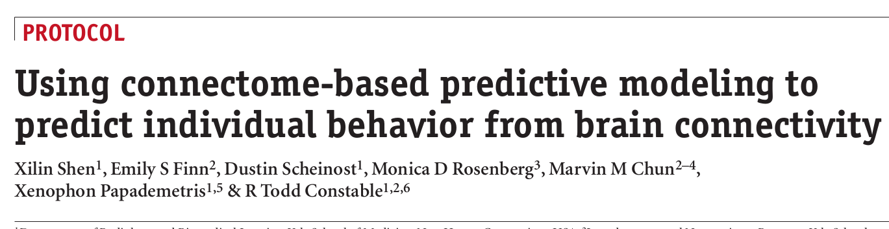
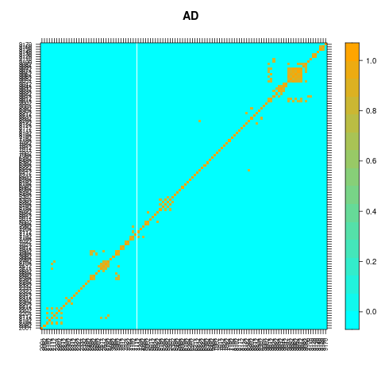

In this week’s lecture, we are going to use R to replicate some results and figures in an article published on “Nature Protocols” (NP).

Figures to replicate include:
First, we will replicate a heatmap of voxel-level neuroimaging features that can differentiate Alzheimer’s diseased (AD) patients to normal control (NC) people like below.

Then, we will explore that connection structures between brain regions of interest (ROI) of AD and NC respectively, try to identify the differences between the two connectomes, and replicate similar figures in the NP paper as following.
Data to use
We are going to use Alzheimer’s Disease Neuroimaging Initiative (ADNI) positron emission tomography (PET) imaging scans from 53 AD patients and 72 NC people. Each imaging scan is a 3D array of dimension 91 x 109 x 91 in the dataset. Each brain scan contains 185,405 effective template voxels, grouped in 116 ROIs. The ROI numbers and corresponding brain region names can be find here
load("ADNIdata.RData")
ls()
[1] "info" "mask" "PET"
info is for the clinical information for each subject.
mask is the atlas for the template of registered voxels for the brain and the ROIs.
PET is the imaging data in a matrix of 125 x 185405
info[1:5,]
Subject.ID Research.Group DX.Group visit.Time NPISCORE FAQ.Total.Score
4 003_S_1059 Patient AD Baseline 2 23
13 005_S_0221 Patient AD Baseline 13 22
34 006_S_0547 Patient AD Baseline 8 21
55 007_S_0316 Patient AD Baseline 3 3
67 007_S_1339 Patient AD Baseline 4 13
MMSE.Total.Score CDR.Total.Score GDS.Total.Score Subject.Sex Subject.Age
4 NA NA NA F 84.72
13 NA NA NA M 67.57
34 NA NA NA M 75.97
55 NA NA NA M 81.01
67 NA NA NA F 79.61
Age.Qualifier Subject.WeightKg Subject.Sex.Num
4 Y 76.66 0
13 Y 112.94 1
34 Y 94.35 1
55 Y 76.02 1
67 Y 74.39 0
table(info[,3])
AD Normal
53 72
dim(mask)
[1] 91 109 91
mask_non0 <- as.vector(mask)[which(as.vector(mask)!=0)]
table(mask_non0)
mask_non0
2001 2002 2101 2102 2111 2112 2201 2202 2211 2212 2301 2302 2311 2312 2321 2322
3526 3381 3599 4056 963 997 4863 5104 888 1015 1038 1399 2529 2151 1690 1707
2331 2332 2401 2402 2501 2502 2601 2602 2611 2612 2701 2702 3001 3002 4001 4002
990 1331 2147 2371 280 289 2992 2134 719 856 852 745 1858 1770 1400 1313
4011 4012 4021 4022 4101 4102 4111 4112 4201 4202 5001 5002 5011 5012 5021 5022
1941 2203 463 335 932 946 978 1132 220 248 2258 1861 1526 1424 2095 2300
5101 5102 5201 5202 5301 5302 5401 5402 6001 6002 6101 6102 6201 6202 6211 6212
1366 1413 3270 2098 941 989 2310 2518 3892 3823 2065 2222 2447 1345 1256 1974
6221 6222 6301 6302 6401 6402 7001 7002 7011 7012 7021 7022 7101 7102 8101 8102
1173 1752 3528 3265 1349 836 962 994 1009 1064 293 280 1100 1057 225 249
8111 8112 8121 8122 8201 8202 8211 8212 8301 8302 9001 9002 9011 9012 9021 9022
2296 3141 1285 1338 4942 4409 755 1187 3200 3557 2603 2648 1894 2117 136 207
9031 9032 9041 9042 9051 9052 9061 9062 9071 9072 9081 9082 9100 9110 9120 9130
1125 861 1694 1795 585 534 1887 2308 869 809 144 159 53 228 665 371
9140 9150 9160 9170
194 243 174 112
length(table(mask_non0))
[1] 116
dim(PET)
[1] 125 185405
Analysis I: Heatmap of hotspots in the brain that differentiate AD and NC
Calculate the Zscore for comparing the means between AD and NC for each voxel.
Zscore.v <- apply(PET, 2, function(x)((mean(x[1:53])-mean(x[54:125]))/sd(x)))
Zscore <- as.vector(mask)
Zscore[which(as.vector(mask)!=0)] <- Zscore.v
Zscore <- array(Zscore, dim=c(91, 109, 91))
Below are some R codes I wrote for plotting brain heatmaps.
MyHeatMapADNI <- function(Beta){
P <-nrow(Beta)
Q <-ncol(Beta)
Xlim <- c(0,2*(P+1))
Ylim <- c(0,2*(Q+1))
RGBColors <- col2rgb(colors()[1:length(colors())])
HSVColors <- rgb2hsv( RGBColors[1,], RGBColors[2,], RGBColors[3,], maxColorValue=255)
HueOrder <- order( HSVColors[1,], HSVColors[2,], HSVColors[3,] )
uBeta <- unique(as.vector(Beta))
ruBeta <- rank(uBeta)
vect <- cbind(uBeta, ruBeta)
l <- length(unique(ruBeta))
plot(0, type="n", xlab="", ylab="", xlim=Xlim, ylim=Ylim, cex.lab=1.0, bty="n", axes=F)
for (p in 1:P){
for (q in 1:Q){
k0 <- ruBeta[which(uBeta==Beta[p,q])]
k <- round(k0*212/l)
if(k==0){ k <-1}
rect(2*(P-p+1)-1,2*(Q-q+1)-1, 2*(P-p+1)+1, 2*(Q-q+1)+1, col=colors()[HueOrder[k]], border=NA, lwd=0)
}
}
}
Use a NC imaging scan as the background.
library(oro.nifti)
length(which(as.vector(mask)!=0))
N_tmplt <- as.vector(mask)
N_tmplt[which(as.vector(mask)!=0)] <- PET[100, ]
N_tmplt <- array(N_tmplt, dim=c(91, 109, 91))
Plot the brain heatmap on the horizontal plan at z=30.
RGBColors <- col2rgb(colors()[1:length(colors())])
HSVColors <- rgb2hsv(RGBColors[1,], RGBColors[2,], RGBColors[3,], maxColorValue=255)
HueOrder <- order( HSVColors[1,], HSVColors[2,], HSVColors[3,] )
#####################################################################
library(fields)
z_cod <- 30
ImgY <- N_tmplt[,,z_cod]
AtlasY <- Zscore[,,z_cod]
rn <- dim(AtlasY)[1]
cn <- dim(AtlasY)[2]
colorN <- 255 #ceiling(max(AtlasY))+1
ColorValue <- tim.colors(colorN)
#AtlasY_Vec <- ceiling(as.vector(AtlasY))
sAtlas <- list(x=c(1:cn), y=c(1:rn), z=t(AtlasY))
MyHeatMapADNI(ImgY)
Beta <- AtlasY
P <-nrow(Beta)
Q <-ncol(Beta)
for (p in 1:P){
for (q in 1:Q){
k0 <- Beta[p,q]
if(k0!=0){
k <- ceiling(k0*250/max(Beta))+1 #ceiling(k0)+1
rect(2*(P-p+1)-1,2*(Q-q+1)-1, 2*(P-p+1)+1, 2*(Q-q+1)+1, col=ColorValue[k], border=NA)
}
}
}
text(2*P-30, 10, labels=paste("z=",z_cod,"mm",sep=""), col="white", font=2, cex=1)
sAtlas <- list(x=c((10*cn+1):(11*cn)), y=c(1:rn), z=t(AtlasY))
image.plot(sAtlas, add=TRUE, breaks=44)
Use similar codes to plot the ROI map projected on the horizontal plan at z=30.
ROI <- mask[,,z_cod]
AtlasY <- mask[,,z_cod]
rn <- dim(AtlasY)[1]
cn <- dim(AtlasY)[2]
colorN <- 45 #ceiling(max(AtlasY))+1
ColorValue <- tim.colors(colorN)
#AtlasY_Vec <- ceiling(as.vector(AtlasY))
sAtlas <- list(x=c(1:cn), y=c(1:rn), z=t(AtlasY))
MyHeatMapADNI(ImgY)
Beta <- AtlasY
P <-nrow(Beta)
Q <-ncol(Beta)
for (p in 1:P){
for (q in 1:Q){
k0 <- Beta[p,q]
if(k0!=0){
k <- ceiling(k0*43/max(Beta))+1 #ceiling(k0)+1
rect(2*(P-p+1)-1,2*(Q-q+1)-1, 2*(P-p+1)+1, 2*(Q-q+1)+1, col=ColorValue[k], border=NA)
}
}
}
text(2*P-30, 10, labels=paste("z=",z_cod,"mm",sep=""), col="white", font=2, cex=1)
sAtlas <- list(x=c((10*cn+1):(11*cn)), y=c(1:rn), z=t(AtlasY))
image.plot(sAtlas, add=TRUE, col=ColorValue[-1], lab.breaks=names(table(ROI)))

From the brain heapmap and ROI map, we can see that both left and right Cerebelum (ROIs 9301 & 9302) cortices are very significant in differentiating AD and NC. There are also differentiating hotspots in cortices Insula (ROIs 3001 & 3002) and Rectus(ROIs 2701 & 2702).
Analysis II: region-level connectomic analysis for AD and NC
First, calculate the means within each ROI for AD and NC, respectively.
ROI_means_AD <- NULL
ROI_means_NC <- NULL
for(r in 1:116){
ROI_mean_AD_v <- apply(PET[1:53, which(mask_non0==names(table(mask_non0))[r])], 1, function(x)(mean(x, na.rm=TRUE)))
ROI_means_AD <- cbind(ROI_means_AD, ROI_mean_AD_v)
ROI_mean_NC_v <- apply(PET[54:125, which(mask_non0==names(table(mask_non0))[r])], 1, function(x)(mean(x, na.rm=TRUE)))
ROI_means_NC <- cbind(ROI_means_NC, ROI_mean_NC_v)
}
Plot the connection levelplots
connect_AD <- cor(ROI_means_AD)
connect_AD[which(abs(connect_AD)<0.8, arr.ind=TRUE)] <- 0
colnames(connect_AD) <- names(table(mask_non0))
rownames(connect_AD) <- names(table(mask_non0))
rgb.palette <- colorRampPalette(c("cyan", "orange"), space = "rgb")
levelplot(connect_AD, scales=list(x=list(cex=0.6, rot=90), y=list(cex=0.6)), xlab="", ylab="", col.regions=rgb.palette(120), main="AD")
connect_NC <- cor(ROI_means_NC)
connect_NC[which(abs(connect_NC)<0.8, arr.ind=TRUE)] <- 0
colnames(connect_NC) <- names(table(mask_non0))
rownames(connect_NC) <- names(table(mask_non0))
levelplot(connect_NC, scales=list(x=list(cex=0.6, rot=90), y=list(cex=0.6)), xlab="", ylab="", col.regions=rgb.palette(120), main="NC")

Plot the 3D brain connection plots
First, you need to install the R package brainconn. See here for more details about the package.
install.packages("remotes")
remotes::install_github("sidchop/brainconn")
Plot out the 3D brain connection plots.
library(brainconn)
mask_coord_roi_new1 <- read.table("mask_coord_roi_new1.txt", header =TRUE)
brainconn(atlas =mask_coord_roi_new1, conmat=abs(connect_AD), node.color = "brown", node.size = 1, edge.width = 1, edge.color.weighted = T, view="ortho")
brainconn(atlas =mask_coord_roi_new1, conmat=abs(connect_NC), node.color = "brown", node.size = 1, edge.width = 1, edge.color.weighted = T, view="ortho")
From the 3D plots or the level plots, we can see that there are more inter-region connections between Frontal_Sup and Frontal_Sup_Orb cortices in the brains of AD patients, compared to for NC people.
Plot the chord diagrams for AD and NC
# install.packages("circlize")
library(circlize)
mat <- abs(connect_AD)
chordDiagram(mat, annotationTrack = "grid",
preAllocateTracks = list(track.height = max(strwidth(unlist(dimnames(mat))))))
circos.track(track.index = 1, panel.fun = function(x, y) {
circos.text(CELL_META$xcenter, CELL_META$ylim[1], CELL_META$sector.index,
facing = "clockwise", niceFacing = TRUE, adj = c(0, 0.5))
}, bg.border = NA)
###
mat <- abs(connect_NC)
chordDiagram(mat, annotationTrack = "grid",
preAllocateTracks = list(track.height = max(strwidth(unlist(dimnames(mat))))))
circos.track(track.index = 1, panel.fun = function(x, y) {
circos.text(CELL_META$xcenter, CELL_META$ylim[1], CELL_META$sector.index,
facing = "clockwise", niceFacing = TRUE, adj = c(0, 0.5))
}, bg.border = NA)